After completing this lesson, you’ll be able to:
You do not need to publish a workspace to upload data to the FME Flow Resources. Instead, you can upload data directly to Resources from the FME Flow web interface. It's as simple as navigating to your desired folder, selecting upload for files or a folder, and then selecting your data from the file system.
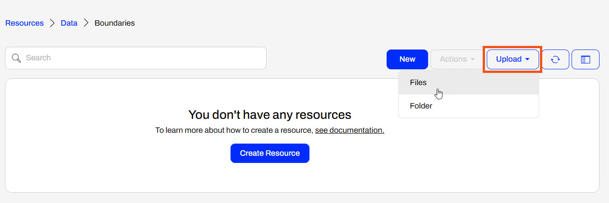
Once FME Flow finishes uploading the file, it will display the count of completed uploads at the top of the page.
In general, uploading files to Resources is very flexible. You may drag a file onto the open Resources folder page, and the data will be uploaded. You may also select multiple files to upload at once or a folder containing numerous files. If you have access to the file system on the FME Flow server, you may also upload data directly to the Resources in the FME Flow System Share, located on Windows by default at C:\ProgramData\Safe Software\FMEFlow\resources.
The data you upload to Resources is available to all workspaces and users with permission to access Resources when running workspaces. For example, you use the VancouverNeighborhoods.kml file as source data for multiple workflows, and you only need to store one copy of the file in Resources for multiple workspaces to use.
FME Flow can connect to network-based resource locations and Amazon S3 file systems through Resource Connections. You create Resource Connections directly from the Resources page on FME Flow.
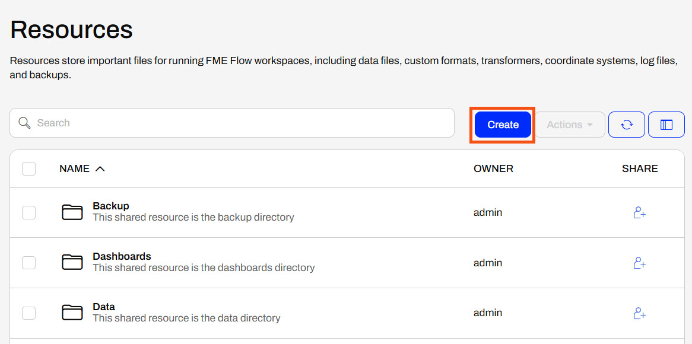
The FME Flow Service Account needs full permissions for network-based resource drives to access, read, and write from the network drive location so that FME Flow can connect and use data from the location successfully. Once you grant permissions to the service account, mapping FME Flow to the network shared file location is as easy as entering the UNC path to the location.
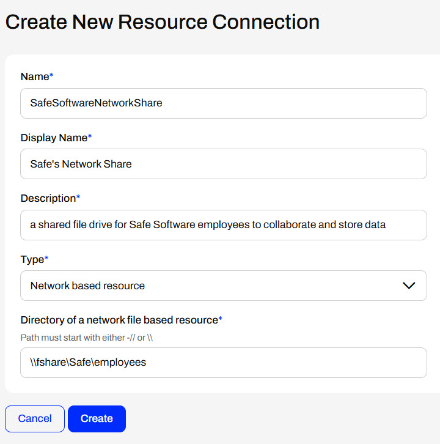
Once you create a Resource Connection, FME Flow displays it on the Resources page.
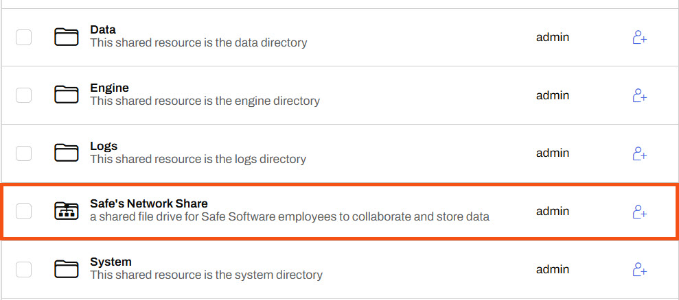
You may also access the Resource Connection's properties like any other Resource item. The System Path is especially useful for referencing the Resource Connection location from workspaces as a parameter.
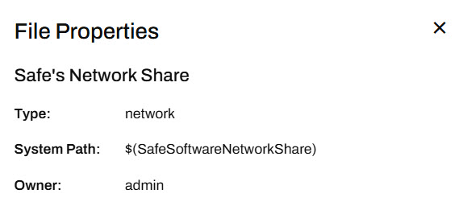
To create an Amazon S3 Resource Connection, you need to enter the bucket name and valid access and secret keys for the S3 location.
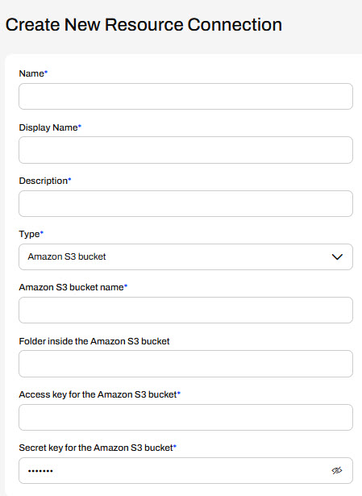
Unlike network-based resource systems, using the system path parameter, you cannot access Amazon S3 Resource Connections from workspaces as a data source or destination. You must use an S3-related transformer, connector, or URL to access the data stored in the S3 bucket.
Using the FME Flow web interface, selecting data from Resources at run-time is simple with published parameters. However, in some cases, you may want to read data from Resources without the end-user having to select it, or restrict the end-user from selecting alternate source data. You accomplish this using FME Flow parameters, specifically, the FME_SHAREDRESOURCE_DATA parameter to reference the Data folder in Resources.
When authoring a workspace to read data from Resources without using a published parameter, you must reference FME_SHAREDRESOURCE_DATA directly in the source file parameter.
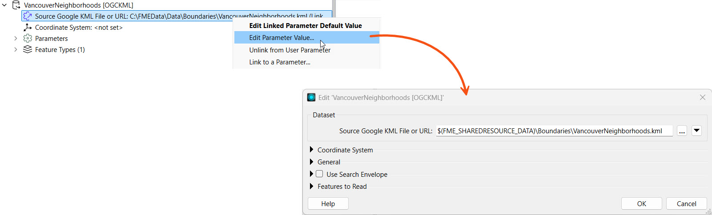
Remember that the Flow parameter FME_SHAREDRESOURCE_DATA includes the Data folder in its path. For example, the source KML file value is FME_SHAREDRESOURCE_DATA\Boundaries\VancouverNeighborhoods.kml not FME_SHAREDRESOURCE_DATA\Data\Boundaries\VancouverNeighborhoods.kml. The easiest way to find the entire path to a Resources dataset is inspecting it's properties on FME Flow and copying the path into the workspace reader parameter.
You must also remove the source file user parameters that FME Workbench creates by default for source data to restrict end-users from altering the source dataset on FME Flow.
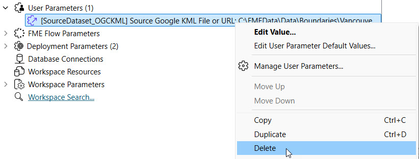
The $(FME_SHAREDRESOURCE_DATA) parameter will fail on FME Workbench unless you set the parameter value to the file server location of the FME Flow System Share. Oftentimes, FME Workbench and FME Flow are not installed on the same machines so FME Workbench cannot directly access the location.

Sven continues with his previous workspace. He understands that the source data files should be stored in FME Flow Resources for storage efficiency and data accessibility across multiple workspaces. However, he just received an updated GML file of voting locations and needs to upload it to Resources. Sven also wants to restrict end-users running this workspace from being able to alter the input source files, so he will link directly to the Resources data in the workspace and remove the source file user parameters.
Follow along with Sven as he uploads the new data and alters his workspace.
Sven navigates to Resouces > Data > Elections. He has an updated GML file of voting locations. Sven clicks Upload and selects Files.
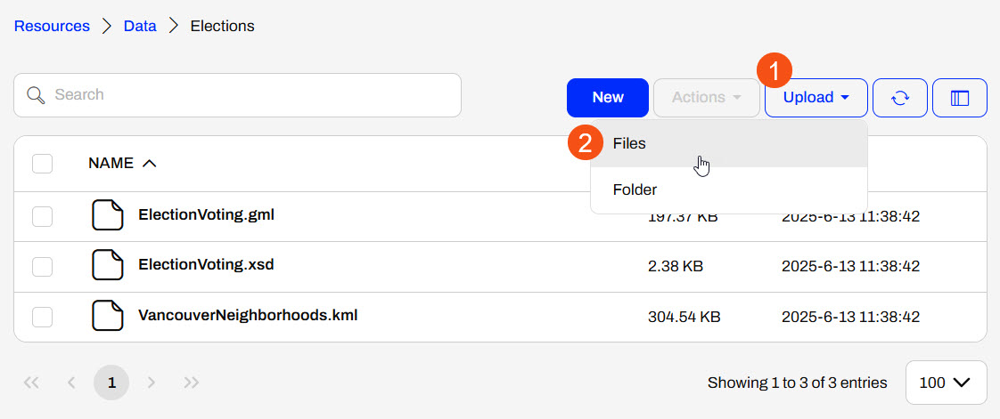
Sven uses the file explorer to navigate to the NewElectionVoting.gml file (C:\FMEData\Data\Elections\NewElectionVoting.gml) and selects it for upload to Resources.
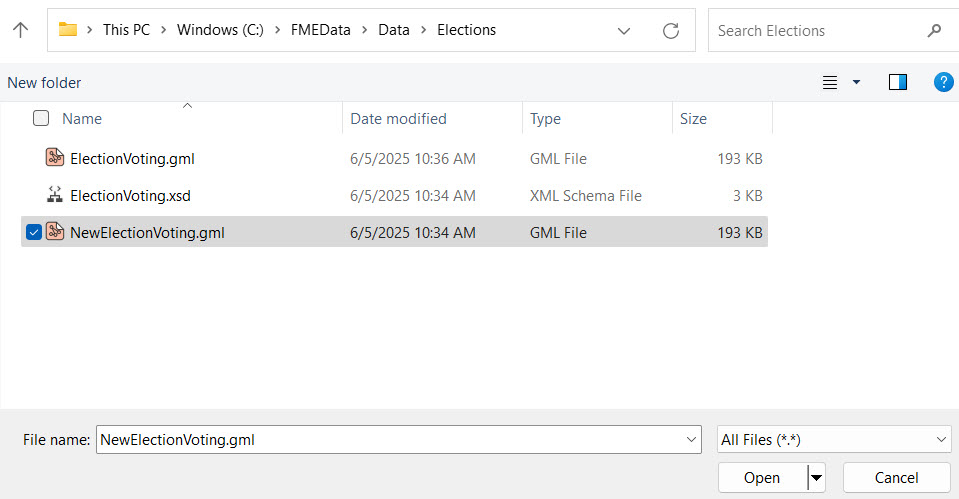
FME Flow adds the NewElectionVoting.gml to the folder, which is ready to use as source data for workspaces.
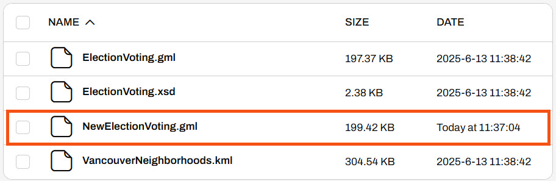
Sven returns to his workspace in FME Workbench (C:\FMEData\Workspaces\DeployWorkflowsWithFMEFlow\upload-and-use-data-in-resources.fmw).

This is the same starting workspace as the previous lesson, Publish Data to FME Flow Resources. If you already have the workspace open in FME Workbench, you can continue working with it.
The workspace currently has user parameters to take source files as input for the KML and GML readers. Sven doesn't want end-users to be able to alter the workspace's source data anymore, so he removes both user parameters. In the Navigator, Sven expands User Parameters, right-clicks each, and deletes them.

FME Workbench doesn't link each source file reader parameter to a user parameter.
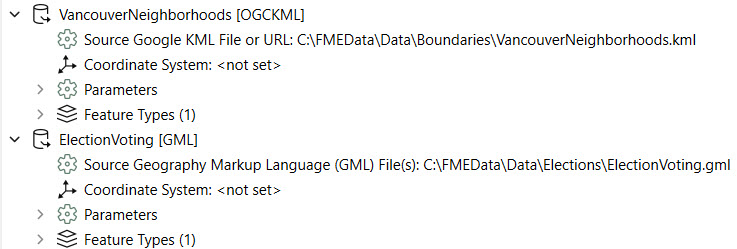
Sven returns to the Elections folder on FME Flow. He selects the VancouverNeighborhoods.kml file, opens the Actions menu, and selects Properties.
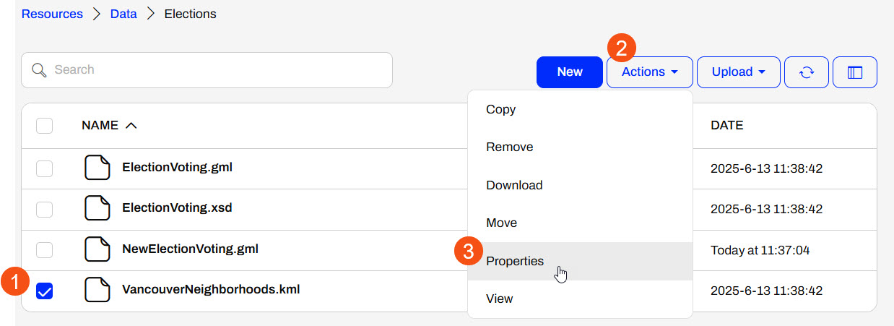
Sven copies the System Path and clicks Close.
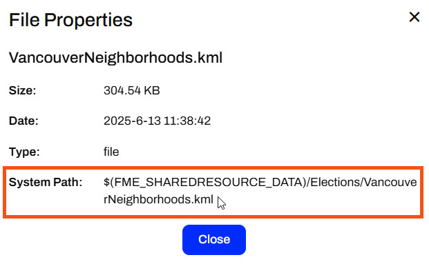
Sven returns to FME Workbench and edits the Source Google KML File or URL parameter for the VancouverNeighborhoods reader. He pastes the System Path value for the KML file.
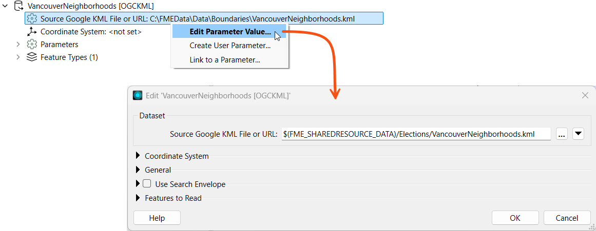
Sven repeats the same steps to reference the NewElectionsVoting.gml file in Resources. He returns to FME Flow, gets the System path for the NewElectionsVoting.gml file, and adds it to the Source GML File parameter.
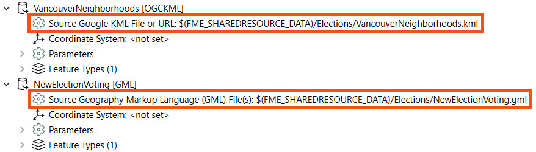
Both source files link to the files stored in Resources > Data > Elections on FME Flow. The $(FME_SHAREDRESOURCE_DATA) parameter denotes this. Neither source file connects to a user parameter, so the end-user cannot alter the source file values on FME Flow.
Sven publishes his workspace to FME Flow, adds it to the Training repository, names it upload-and-use-data-in-resources.fmw, and registers it with the Job Submitter service.


Sven opens the Run Workspace page and selects the workspace he just published. Since Sven removed the User Parameters, there are no Published Parameters to configure. Sven clicks Run to run the workspace, which uses the source data stored in Resources.
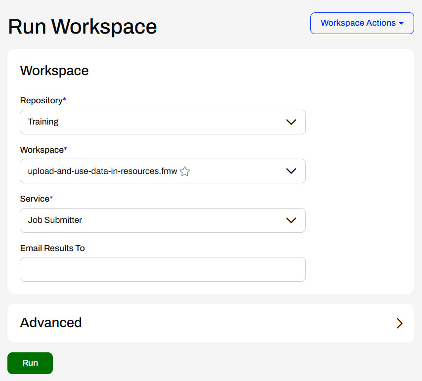